Overview of all implements for the Bruut OpenAgbot: the 77 that are worked out in FreeCAD, with every variant on its own page, followed by the 12 ideas that are not worked out yet.
Generated from the repository READMEs · 2026-11-04 · openagbot.com
Grassland slit seeder. 1 m modules with 8 rows at 125 mm and coupling flanges. A thin disc cuts a 15 mm slot, the seed is placed about 12 mm deep and a sprung press wheel closes the slot. Every row follows the ground on its own arm; two gas springs push the floating lift frame down with robot weight.
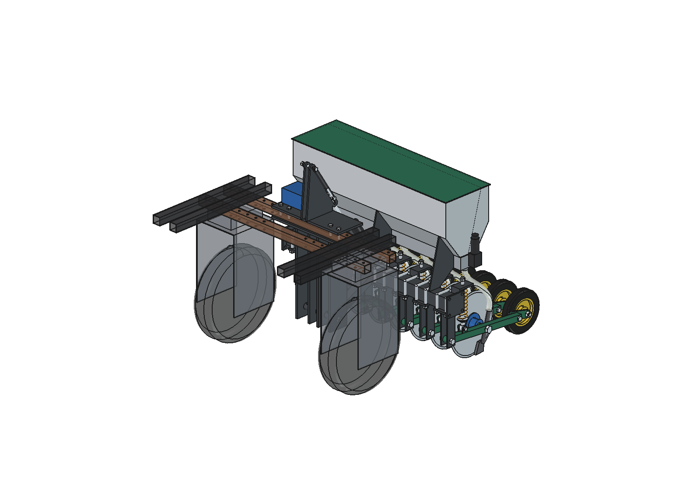
Simple
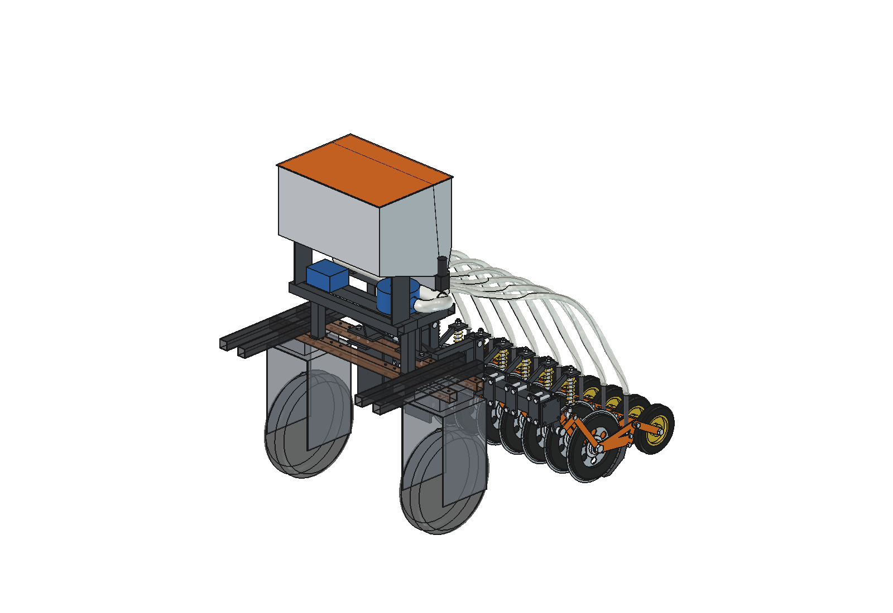
Advanced
2 variants: Simple · Advanced Folder: overseeder/
Overseeder · variant 1 of 2
Simple
Angled single disc (7°, Ø300 × 3) with a seed boot in its lee and a depth ring. Gravity-fed seed hopper with a compartment for grass (41 l) and one for fine seed (18 l), each with its own cam roller and a motor that follows the driving speed. Built on the headstock and lift frame of the simple applicator v2.
8 rows at 125 mm = 1 m per module
Draft force approx. 335 N (normal)
Depth within ±3 mm: 94 %
About €1,675 in parts
Folder: overseeder/simple/
Overseeder · variant 2 of 2
Advanced
Parallel linkage so the toolbar stays parallel, straight Ø300 × 3 disc with depth rings on both sides, a curved seed coulter directly behind the disc and a press wheel in a fork. Air seeder (62 + 17 l hopper, 12 V fan) on a frame above the rear axle blows the seed through 8 hoses to the coulters.
8 rows at 125 mm = 1 m per module
2 gas springs in the slotted hole
Depth within ±3 mm: 98 %
About €2,280 in parts
Folder: overseeder/advanced/
Implement · Spraying, Fertilizing & Irrigation
Liquid fertilizer applicator
Injects liquid fertilizer (such as RENURE) just under the sward, without mist or drift. Concept versions (simple, simple v2, advanced) and the precision applicator, the first production version with a roller pump.
SimpleSimple v2AdvancedPrecision: roller pumpPrecision V2 on the robotPrecision V3: two liquids
6 variants: Simple · Simple v2 · Advanced · Precision: roller pump · Precision V2 on the robot · Precision V3: two liquids Folder: liquid fertilizer applicator/
Liquid fertilizer applicator · variant 1 of 6
Simple
Cheap and robust: 5 fixed injection knives with a stainless steel tube, two wheelbarrow wheels as depth wheels, a lift frame with a single low pivot and one cheap linear actuator, a 12 V diaphragm pump with fixed regulator and orifice plates. Only flat bar, tube and standard parts.
Simple version plus a flat coulter disc Ø300 in front of each knife, cutting 45 mm deep; the knife runs 14 mm behind it in the same plane. Costs 26 kg extra on the lift frame (70 kg), a 1500 N actuator and up to 50 kg of ballast in hard sward.
Disc, knife, tube and press wheel per element on spring arms; a 5-channel peristaltic pump driven by a worm-gear motor whose speed follows the robot's driving speed, and an electrically lifted parallel linkage that floats while working (slotted hole). No ground wheel.
The first production version, built with Herre Bartlema from measured parts. A modular peristaltic roller pump on the robot, stepper-driven so the dose follows the driving speed; 5 or 10 sections.
Applicator V2 with the roller pump on the robot: Ø 325 discs with injector knives behind them on a parallel linkage with an electric actuator, and a press wheel behind every knife that closes the slot. 5 rows, or 2 rows in the middle (applicator V1, combined).
Applicator V3 with 5 rows of trailing double knives (both outlets 50 mm deep) and press wheels, fed by the 10-section roller pump: 5 sections per liquid, so two products go in at once.
Pushes feed back to the feed fence. Sits at the back of the robot; the robot drives with the auger first. The auger picks up the pushed-away feed and carries it sideways to the fence.
Ø320 auger under a 2 mm folded hood with 4 bends. Foot-mounted gearmotor on top of the hood, 08B-1 chain with tensioner along the left side plate. Mounted with 4 arms on the rear flange holes of the rear wheel modules. Open discharge end. Includes a feed-transport model and a force animation.
24 V gearmotor with chain drive
Open discharge end
Feed-transport model and force animation
Folder: feed pusher auger/V1/
Feed pusher auger · variant 2 of 3
V2
V1 without a through shaft: the free end hangs on a strap with a Ø25 pin and bearings inside the auger, the drive end has a stepped drive bush with an M6 shear bolt. The auger slides out through a cutout in the end plate.
Auger removable without opening the frame
M6 shear bolt breaks at 252 Nm
Frame, hood and drive as V1
Folder: feed pusher auger/V2/
Feed pusher auger · variant 3 of 3
V3
V2 with the existing, measured auger: Ø300 flight on a Ø60 x 3 core tube, M12 shear bolt between welded rings, and a wear-resistant plastic ring on a fixed Ø20 pin at the free end instead of bearings.
Measured existing auger
No bearings at the free end
Frame, hood and drive as V2
Folder: feed pusher auger/V3/
Implement · Transport & General
Disc brushes
Sweeper disc brushes for loose material on concrete. Each brush on its own 48 V worm gearmotor (NMRV063, 550 W); reversing the motors makes a windrow in the middle or spreads material wide. Mounted on an 80 × 80 toolbar under the rear beams with U-bolts. Includes an animation with a particle model.
Two Ø750 brushes (standard). Working width 1.50 m with brushes touching to 1.70 m with 200 mm between them. Spread wide or make a windrow.
2 × Ø750
1.50–1.70 m
Folder: brushes/simple/
Disc brushes · variant 2 of 3
Double 650
Two Ø650 brushes: the same job, narrower and lighter.
2 × Ø650
1.30–1.50 m
Folder: brushes/simple/
Disc brushes · variant 3 of 3
Single 850
One Ø850 brush covering the robot's own width, sweeping the strip in front of the robot to one side.
1 × Ø850
0.85 m
Folder: brushes/simple/
Implement · Soil Cultivation & Weed Control
Dockweed drill
Finds a dock plant (broad-leaved dock) and mills out its root on a CNC gantry behind the robot, chemical-free. Six numbered versions that each change one part of the machine.
X slide on 2 aluminium profiles 40 x 80 with HGR15 rails and 4 carriages; cutter Ø180 at 1500 rpm in a pot Ø250 and a mowing disc as second tool.
X stroke 1000 mm
HGR15 rails
Includes an animation
Folder: dockweed drill/v1/
Dockweed drill · variant 2 of 6
v2
X slide on PTO-shaft tubes. The robot is the Y axis and stops with the plant under the spindle; the cutter goes 150 mm deep and grinds up the root crown and upper taproot.
X slide on PTO tubes
Cutter 150 mm deep
Animations: three plants, nettle mowing
Folder: dockweed drill/v2/
Dockweed drill · variant 3 of 6
v3
v2 with a cheaper Z axis: a 100 x 100 mast with the spindle inside, rolling on 8 V-groove corner rollers, and a steel can like Robot Ruud's.
Z mast on corner rollers
Ruud-style can
Includes an animation
Folder: dockweed drill/v3/
Dockweed drill · variant 4 of 6
v4
v3 with a drop-leg trailer jack as the Z axis (stroke 380 mm, NEMA 23) and the 800 W gearmotor with chain on 2 x UCP 204.
Trailer jack as Z
800 W gearmotor + chain
Includes an animation
Folder: dockweed drill/v4/
Dockweed drill · variant 5 of 6
v5
v4 with the 800 W gearmotor directly above the spindle through a flexible jaw coupling: no chain, no sprockets.
Direct drive, jaw coupling
No chain guard
No animation
Folder: dockweed drill/v5/
Dockweed drill · variant 6 of 6
v6
v5 with a 40 x 40 frame, PTO tubes bolted between 12 mm side plates, a Z tube on HGR15 rails driven by a 24 V actuator, and a Ø30 spindle in 2 x UCP 206.
Bolted PTO tubes
24 V actuator Z axis
Ø30 spindle in UCP 206
Folder: dockweed drill/v6/
Implement · Soil Cultivation & Weed Control
Trencher
Wheel trencher for cutting narrow trenches.
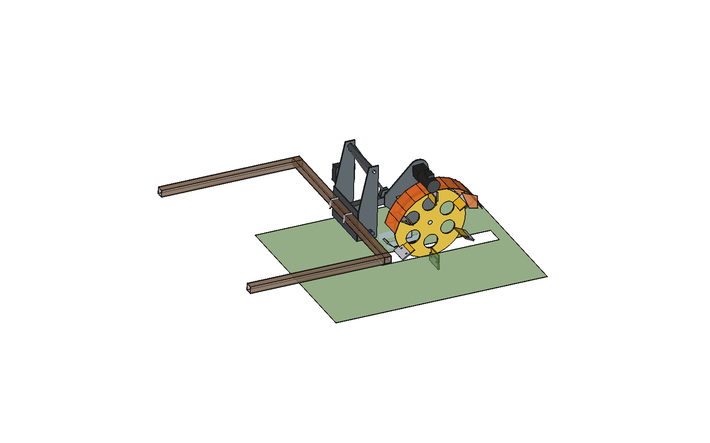
One design
1 variant: One design Folder: trencher/
Trencher · variant 1 of 1
One design
Wheel trencher mounted on the Bruut. Renders and STEP export. An older single-script design (trencher_design.py).
Renders and STEP export
Folder: trencher/
Implement · Measuring & Sensors
Field marker
Stakes out points from a coordinate list (piles, posts, planting positions, plot corners). The robot stops roughly behind the point; an XYZ stage puts a spray-paint head exactly on it.
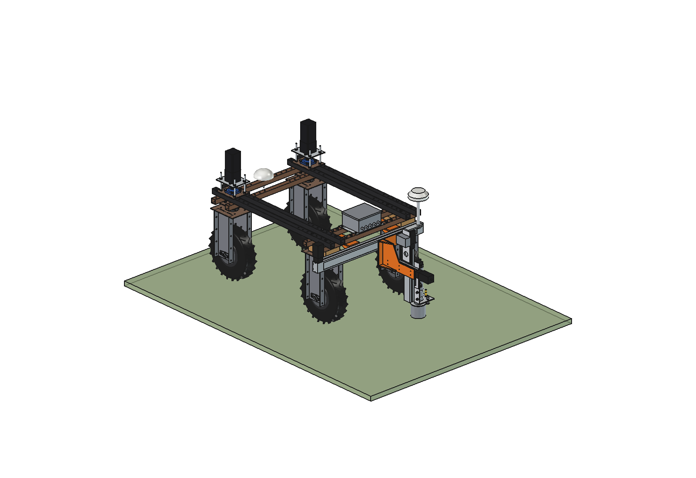
Simple
1 variant: Simple Folder: marker/
Field marker · variant 1 of 1
Simple
Three bought linear modules: X 800 mm belt module, Y 200 mm and Z 300 mm ball screws. Paint head: upside-down marking-spray can in a PVC drain pipe pushed by a servo; sprung PVC 110 shroud with an inductive sensor finds the ground. Second GNSS antenna on a mast straight above the nozzle.
Robot may stop ±100 mm off
NEMA 23 closed-loop motors
About €1,450 in parts
Concept lists flag, peg, punch and soil-probe heads
Folder: marker/simple/
Implement · Spraying, Fertilizing & Irrigation
Mobile refiller
Support robot that brings liquid (and in concept seed, granular fertilizer, water, batteries) to the working robots, so they never leave the field.
268 l T-shaped tank with a pump below the liquid level, a slewing boom with a trolley and a spout, an RTK antenna on the spout and a camera for confirmation, and a powered trailer of 246 l (6 driven wheels). Tops up the working robot in the straight reverse of its headland turn while both drive.
About 25 l per turn, ≈ 3 s standstill
Pump 150 l/min
About €6,000 in parts
Folder: mobile refiller/liquid/
Mobile refiller · variant 2 of 5
Simple (IBC)
A standard 1000 l IBC set on with pallet forks, pump under the IBC, a fixed mast with a hanging hose and the RTK antenna above the nozzle. The working robot skips passes so every turn is a U-turn; the refiller stands inside the turn and the robot stops ≈ 13 s under the nozzle; 1 m further per refill.
Standard 1000 l IBC
No boom, trailer or camera
About €1,650 in parts
Folder: mobile refiller/simple/
Mobile refiller · variant 3 of 5
Stationary: IBC trailer
Single-axle trailer for one or two 1000 l IBCs, parked on the headland by a tractor. Control box (pump, battery, controller, RTK receiver, radio) on the A-frame drawbar and a mast with swinging arm, drop pipe, drip-stop nozzle and RTK antenna straight above the nozzle.
1 or 2 IBCs
120 l per visit
The working robot drives to it
Folder: mobile refiller/stationary/ibc_trailer/
Mobile refiller · variant 4 of 5
Stationary: flat wagon
Standard two-axle flat bale wagon (8 × 2.48 m) with 6 IBCs, two across. Only two holes in the deck and two box hangers; suction header along the deck, control box under the deck, mast on a skid at the rear left corner.
6 IBCs
Pump 0.8 m below the IBC bottoms
Wagon itself unchanged
Folder: mobile refiller/stationary/flat_wagon/
Mobile refiller · variant 5 of 5
Stationary: three-point frame
Welded frame on four legs for one 1000 l IBC, picked up on a category 2 three-point linkage and set down on the headland. The mast doubles as the hitch tower; control box under the platform.
1 IBC
Category 2 three-point
Pump 535 mm below the IBC bottom
Folder: mobile refiller/stationary/three_point/
Implement · Mowing
Around-pole fence mower
Mows the strip under an electric fence and goes around the posts by itself.
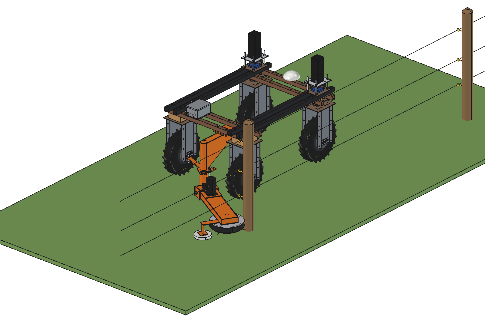
Simple
1 variant: Simple Folder: around_pole_mower/
Around-pole fence mower · variant 1 of 1
Simple
Trailing swing arm on a post behind the right rear wheel, held on a rest stop by a spring. A Ø400 nylon-string head under a PE-pipe guard ring slides around each post. 48 V BLDC motor at the root of the arm, V-belt inside the arm to a bought lawn-tractor deck spindle; head 182 mm high on an HDPE skid. No sensor, no actuator, no software.
≈ 615 W at 0.5 m/s
1.8 km of fence per hour
About €575 in parts
Arm dynamics and animation with grass
Folder: around_pole_mower/simple/
Implement · Mowing
Weed picker
Tops thistles, ragwort and dock above the grass and gathers them in one windrow, no bin. Ragwort in particular has to leave the field.
Mowing deck
1 variant: Mowing deck Folder: weed picker/
Weed picker · variant 1 of 1
Mowing deck
Twin-rotor mowing deck in front of the robot: two rotors with free-swinging blades (Ø510, 990 mm cut) turn inwards and throw the chopped weed out of a centre opening as a windrow ≈ 320 mm wide. Each rotor: 48 V BLDC motor on a lawn-tractor deck spindle; the left rotor runs 24 mm higher. Cut height 100–400 mm from a 4000 N actuator on a parallel linkage, with a float link for humps.
≈ 1 kW at 0.5 m/s
82 kg (rear counterweight advised)
About €1,040 in parts
Animation in a weed patch
Folder: weed picker/mowing_deck/
Implement · Mowing
Sickle bar mower
Mows grass with double-knife cutter bars instead of rotating blades: a clean cut at low power, the grass left lying in a swath to dry. The bars follow the ground on their shoes.
Triple
1 variant: Triple Folder: sickle bar mower/
Sickle bar mower · variant 1 of 1
Triple
Three double-knife bars: 1.25 m in front of the robot on a parallel linkage with a float link and a roll pin, and two 1.0 m wings in the middle of the frame on a mid frame under the top beams. Each bar: upper and lower knife (50 mm pitch, stroke 50, 600 rpm), a crank gearbox with two cranks 180° apart so the knife forces cancel, and a 48 V 1000 W BLDC motor. The wings fold up with a 4000 N actuator each; the anchor slides in a slot so they float with the ground.
3.25 m working width
≈ 2.2 kW mowing at 1 m/s, 1.0 ha/h
210 kg, 163 kg on the shoes while mowing
About €3,200 in parts
Folder: sickle bar mower/triple/
Implement · Spraying, Fertilizing & Irrigation
Irrigation
Irrigates grassland by flooding at low pressure from a pump at the ditch: little energy, no wind drift, no evaporation in the air.
The robot carries a reel with 150 m of 3" lay-flat hose, lays it out empty, the petrol pump at the ditch floods a 4 m strip (outlets every 2 m), the hose runs empty and the robot winds it up again. Pinch rollers keep the reel dry and squeeze the last water out.
7.4 m³/h at 0.17 bar, CU ≈ 99 %
122 min per 500 m² strip at 25 mm
146 kg, about €1,900 in parts
Folder: irrigation/stationary + roller/
Implement · Soil Cultivation & Weed Control
Spot sprayer
Sprays weeds plant by plant instead of the whole field. A camera in front finds the weeds; the boom behind opens only the nozzles above a plant.
Folding 3.75 m boom
1 variant: Folding 3.75 m boom Folder: spotspray unit/
Spot sprayer · variant 1 of 1
Folding 3.75 m boom
Wide-angle global-shutter camera on a mast (1.48 m, 55° down) sees the whole strip from 1.8 m ahead; 2.65 s later 15 PWM nozzles at 250 mm on a stainless pipe open above the plant. Centre section 1.25 m and two 1.25 m wings that fold up in 3.2 s with a 24 V actuator each, also in the field. 120 l tank and diaphragm pump on the robot.
≈ 20 l/ha at 5 % weed cover, 1.1 ha/h
91 kg
About €3,580 in parts
Animation with docks and a fence post
Folder: spotspray unit/boom/
Implement · Soil Cultivation & Weed Control
In-row weeder
Hoes inside two rows of broccoli (375 mm apart, wheels in the inter-rows). Camera under the front beams finds the plants 0.84 s ahead; knives swing out around each plant.
Two row units under the belly on parallelograms with gauge wheels in the robot's wheel track. A NEMA 23 closed-loop stepper with a 10:1 gearbox swings a 220 mm arm with a spring-steel finger and a flat knife 20 mm deep. Out in 98 ms, back in 148 ms; never closer than 50 mm to a stem.
0.5 m/s, 6,400 plants/h
55 kg
About €2,240 in parts
Folder: in row weeder/finger/
In-row weeder · variant 2 of 2
Double arms
Two knives per row (4 steppers) that open to both sides of each plant and close behind it, timed by the real distance to the stem. Each knife moves only 78 mm: out in 89 ms, back in 118 ms.
90 % of the row band outside the safe zones hoed
68 kg
About €2,820 in parts
Folder: in row weeder/double_arm/
Implement · Soil Cultivation & Weed Control
Belt rake
Band rake in front of the robot: a rubber belt with 15 tine bars around two drums (1.52 m working width). Combs weed seedlings out of nursery beds between young trees or rakes moss and thatch out of grassland into one windrow.
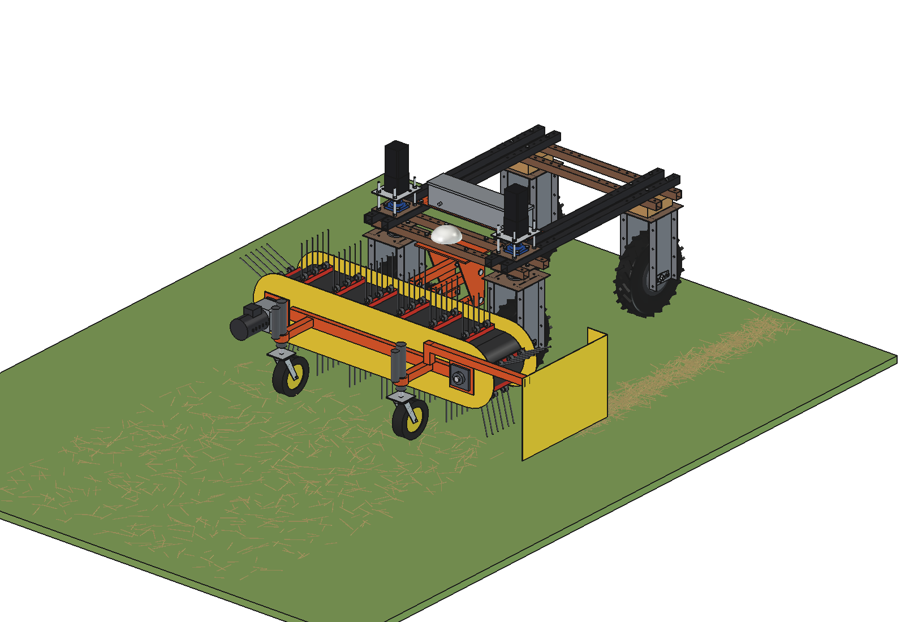
Electric
1 variant: Electric Folder: bandrake/
Belt rake · variant 1 of 1
Electric
48 V 750 W gearmotor with a 20:1 planetary gearbox on the right drum. Two swivel castors on 24 V actuators carry the 110 kg rake, set the depth and lift it 100 mm for the headland; a free parallelogram pushes it.
Comb mode 0.6 m/s, rake mode 1.2 m/s, 0.49 ha/h
About €2,380 in parts
Tine forces and animation
Folder: bandrake/electric/
Implement · Soil Cultivation & Weed Control
Weeds burner (flame weeder)
Pre-emergence flame weeder for freshly sown beds (carrot, onion, beetroot, parsnip): kills the emerged seedlings without moving the soil.
Propane hood
1 variant: Propane hood Folder: weeds burner/
Weeds burner (flame weeder) · variant 1 of 1
Propane hood
Insulated 1.5 × 0.8 m hood behind the robot with 6 flat-flame burners (13 kg/h, 167 kW). Two 18 kg forklift cylinders with liquid withdrawal on the robot, a vaporiser coil in the hood, two main solenoid valves in series, a motorised regulator, pilots with igniters and flame sensors; the valves close at once when the robot stops.
34 kg/ha at 0.7 m/s, 0.84 ha per filling
Gas ≈ €55/ha
131 kg empty, about €3,400 in parts
Folder: weeds burner/propane_hood/
Implement · Soil Cultivation & Weed Control
Push blade
Front-mounted dozer / grader blade: pushes feed back to the feed fence, scrapes slurry and snow, grades soil and paths. Covers the manure scraper idea as well.
Simple
1 variant: Simple Folder: push blade/
Push blade · variant 1 of 1
Simple
1100 x 450 moldboard on R700 with a bolted rubber edge (steel edge for soil), angle +-25 degrees on an M30 king pin with a lock pin, two lift arms on a front toolbar under the front lower beams, 24 V 1500 N actuator with a float slot.
Net push 801 N on dry concrete, 348 N with manure
Lift 159 mm, clears the steered front tyres by 148 mm
81 kg
Folder: push blade/simple/
Implement · Spraying, Fertilizing & Irrigation
Fertilizer spreader
Spinning-disc spreader for granular fertilizer (and granular lime with a coarser roller). Dose follows the driving speed and a task map.
Simple
1 variant: Simple Folder: fertilizer spreader/
Fertilizer spreader · variant 1 of 1
Simple
88 l PE hopper over and behind the rear axle on rails on the upper beams, fluted metering roller O80 on a 12 V gearmotor, vaned disc O400 on a 48 V BLDC motor behind the robot with a guard towards the robot. Optional 2 x 20 kg front counterweight.
Driving width 4.1..6.7 m (500..900 rpm)
100..541 kg/ha at 1 m/s
~1.6 ha/h, 130 kg full
Folder: fertilizer spreader/simple/
Implement · Crop & Soil
Grassland harrow
Pasture harrow behind the robot: a levelling board spreads molehills and dung pats, two rows of spring tines rake out moss and work in seed. Covers the molehill spreader idea.
Simple
1 variant: Simple Folder: grassland harrow/
Grassland harrow · variant 1 of 1
Simple
1300 mm harrow on two lift arms from a rear toolbar (the push blade geometry, mirrored): angle-iron levelling board, 32 double spring tines O8 (a track every 37.5 mm), floats on the sward, lifted by a 24 V actuator.
Pull 629 N on grass, grip margin 1.44
0.56 ha/h at 1.5 m/s
85 kg
Folder: grassland harrow/simple/
Implement · Crop & Soil
Soil sampler
Takes soil cores at GPS points with a gouge on a ball-screw Z axis in the middle of the robot and collects 40 cores per plot in a cup of a 10-cup carousel.
Simple
1 variant: Simple Folder: soil sampler/
Soil sampler · variant 1 of 1
Simple
SBR20 rails and an SFU1605 ball screw with a NEMA23 on a mast plate between two bridges on the upper beams, O25 gouge with ejector, sprung foot, swing chute and funnel, carousel of 10 cups of 1.3 l.
0-10 cm grass needs 0.5..0.8 kN, 1.3 kN available
38 s per core, 25 min per plot
33 kg
Folder: soil sampler/simple/
Implement · Soil Cultivation & Weed Control
Inter-row hoe
Single-axis guided hoe behind the robot for row crops such as maize: two hoe units in the inter-rows behind the wheels, kept on the rows by a camera-steered ball-screw side shift.
Simple
1 variant: Simple Folder: inter row hoe/
Inter-row hoe · variant 1 of 1
Simple
Rear toolbar and lift arms of the grassland harrow (3000 N actuator), carrier with 2 HGR15 rails, 8 mm shift plate moved +-75 mm by an SFU1610 ball screw and a closed-loop NEMA23. Two parallelogram units with a gauge wheel O250, a goosefoot 250 and two L-blades (550 mm per inter-row, 100 mm band each side of the row). Camera on a mast above the middle row.
1.5 m per pass (2 x 750), ~0.43 ha/h at 1 m/s
Pull 764 N at 20 mm, grip margin 1.23
Side shift 80 mm/s, ~119 kg, needs the 2 x 20 kg front counterweight
Folder: inter row hoe/simple/
Implement · Soil Cultivation & Weed Control
Grassland aerator
Slitter aerator in the middle of the robot, between the axles: a passive roller with star discs cuts slits into grassland, pressed in by frame weight and ballast, both axles sharing the reaction.
Simple
1 variant: Simple Folder: grassland aerator/
Grassland aerator · variant 1 of 1
Simple
2 bridges on the upper beams, side arms on pivots outside the steering sweep, roller with 8 stars of 6 slitting knives (O450) in 2 UCFL208 bearings, cross beam with 4 x 20 kg ballast, 24 V 2000 N actuator from a mast on the rear bridge (lifts 14 degrees, can press).
1.2 m, slits 150 x 236 mm, 70 mm deep
~0.41 ha/h at 1.2 m/s, pull 325 N
201 kg incl. 80 kg ballast, 47 % on the front axle
Folder: grassland aerator/simple/
Implement · Transport & General
Three-point hitch
Category 0 three-point linkage at the rear with two electric lift rods, so standard sub-compact implements can hang on the robot. Drawn with a small 5-tine cultivator, which covers the small cultivator idea.
Simple
1 variant: Simple Folder: three point hitch/
Three-point hitch · variant 1 of 1
Simple
Rear toolbar of the grassland harrow with lugs for 2 lower links (50 x 20, O16 pins, 500 spacing), a top link bracket and 2 x 24 V 3000 N actuators as lift rods with a slotted eye (the implement floats). Demo implement: 1.0 m cultivator, 5 S-tines with duckfoot shares, 2 gauge wheels.
Lower pins 220 .. 425 mm, implement level within 2 degrees
Carries ~56 kg lifted with the 2 x 20 kg counterweight (front axle >= 20 %)
Cultivator: 808 N draft at 40 mm, grip margin 1.29, 0.29 ha/h
Folder: three point hitch/simple/
Implement · Transport & General
Crate carrier
Flat deck on the upper beams for 8 harvest crates, carried from the rows to the field edge following a picker (UWB) or on an RTK route. The same deck carries tools and material (covers the tool cart idea).
Simple
1 variant: Simple Folder: crate carrier/
Crate carrier · variant 1 of 1
Simple
3 bearers across the upper beams, side rails and 18 mm plywood (1300 x 1000, loading height 757), angle guides, divider, mesh headboard in front of the crates, 2 ratchet straps; 2 UWB anchors, a stop/go/follow box and the GNSS antenna moved to a mast above the stack.
8 crates 600 x 400 x 300 in 2 layers
Apples: 141 kg, 48 % front axle, side tip angle 28 degrees
~107 crates per hour on a 150 m shuttle, 51 kg
Folder: crate carrier/simple/
Implement · Transport & General
Counterweights
Stackable 11 kg ballast plates on the lower cross beams, front and rear, to keep enough load on the front axle with rear implements (and on the rear axle with the push blade).
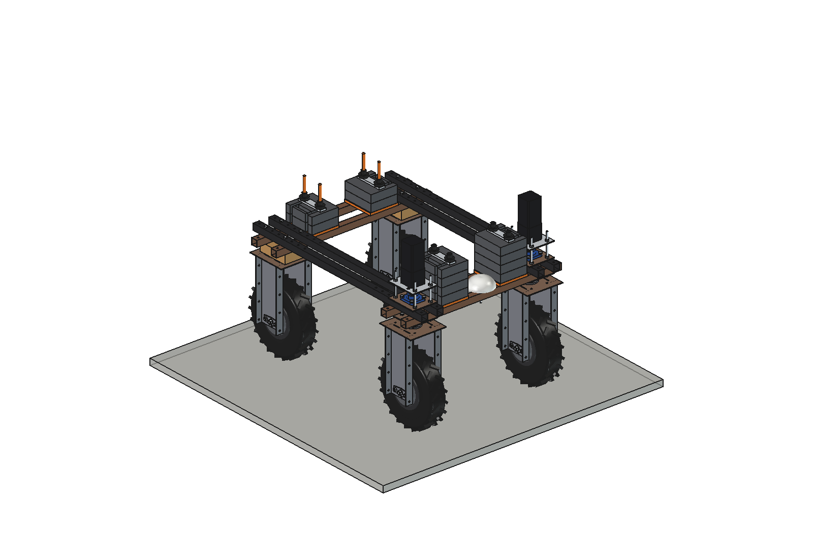
Simple
1 variant: Simple Folder: counterweights/
Counterweights · variant 1 of 1
Simple
Per stack (4 stacks): a 15 mm base plate on the two lower beams with 2 M16 studs, up to 4 plates of 170 x 200 x 50 with open slots that slide on from the side, a clamp bar and 2 knob nuts. Fits together with the push blade and the rear toolbar.
11 kg per plate, 0..99 kg per axle end
Inter-row hoe: 2 plates per stack front, 5 % -> 21 % front axle
Harrow, hitch, spreader: 1 plate per stack front
Folder: counterweights/simple/
Implement · Power & Drive
Battery pack
Two exchangeable 48 V LiFePO4 pods (2.56 kWh each) hanging under the upper beams between the wheels: low, centred, and free of all toolbars and decks.
Per side: 2 hangers (flat bar 40 x 8, M10 through the upper beams) and an aluminium pod with 16 LiFePO4 cells 50 Ah, a 16S BMS, hook strips, latches, handles and an Anderson SB50 connector.
51.2 V, 2 x 2.56 kWh, 26 kg per pod
Inter-row hoe 1.8 -> 6.0 h, harrow 1.4 -> 4.9 h
~230 N extra grip, 52 mm from the steered tyres
Folder: battery pack/simple/
Battery pack · variant 2 of 2
MBH3+ box
Open rack for BatteryLabs MBH3+ drop-in batteries (14S 48 V 50 Ah, 2.56 kWh each) in tray segments of 100 mm, so 2 batteries grow to 3 or 4; on top, sunk in the centre well (recommended) or in side cradles. Also a closed alu cabinet and a wooden box version, with placeholders for MBH3+ and MU3+.
2 / 4 batteries: 4.6 / 9.2 kWh usable
Centre well: cg 502 mm
Inter-row hoe 4.3 / 8.5 h
Folder: battery pack/mbh3_box/
Implement · Power & Drive
Solar canopy
Roof of solar panels on a tube frame above the robot that charges the battery through an MPPT controller and carries the GNSS antenna.
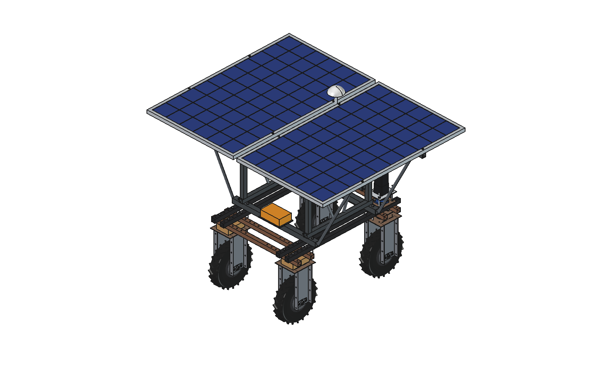
Canopy
1 variant: Canopy Folder: solar/
Solar canopy · variant 1 of 1
Canopy
2 panels 1000 x 1650 mm (320 Wp each, 3 possible) on a steel tube frame: base tubes on the upper beams, 4 posts, top rails and cross members, diagonal struts to the overhangs; MPPT box, GNSS antenna on a mast between the panels.
640 Wp, ~480 kWh per year (NL)
2.3 kWh per day in June, 0.2 in December
91 kg, tips over at ~29 degrees static
Folder: solar/
Implement · Spreading & Bedding
Compost spreader
Bin on the upper beams with a moving floor belt and a beater behind the robot: top-dresses beds, orchard strips and grassland with compost in an even 1.1 m layer, dose from the belt speed.
Simple
1 variant: Simple Folder: compost spreader/
Compost spreader · variant 1 of 1
Simple
299 l bin (150 kg payload) on 3 bearers, floor belt 920 wide on a UHMW slide bed round 2 drums O100 driven by a 24 V worm gearmotor, slide gate 30..150 mm, paddle beater O280 at 300 rpm on a 48 V 1 kW BLDC with a poly-V belt and a deflector hood.
1..3 kg/m2, 50..150 m2 per bin, ~1.1 t/h with refilling
Needs 1 counterweight plate per stack (front axle 33 %)
190 kg empty, climbs 8 degrees full
Folder: compost spreader/simple/
Implement · Crop & Soil
Stone picker
Mid-mounted under the robot between the axles: a 1 m tine rotor flicks stones over a comb into a sieve basket, on a parallelogram lift; the floor drops open at the heap.
Simple
1 variant: Simple Folder: stone picker/
Stone picker · variant 1 of 1
Simple
Rotor O114 with 48 double spring tines (tip radius 150, 20 mm deep) on a 48 V 750 W gearmotor at 250 rpm, comb of 12 mm bars, 40 l basket with a sieve floor (25 mm gaps) opened by a 24 V actuator, frame on 4 swing links outside the wheel line lifted 100 mm by one 1500 N actuator.
1 m wide, 1200..1700 m2/h, ~1 ha per day
44 kg of stones per basket, front axle 41..45 %, no ballast
92 kg, 525 W rotor
Folder: stone picker/simple/
Implement · Crop & Soil
Mulch layer
Category 0 implement for the three-point hitch that lays 1.2 m mulch foil over the bed behind the robot: press wheels push the edges down, angled discs bury them.
Simple
1 variant: Simple Folder: mulch layer/
Mulch layer · variant 1 of 1
Simple
Frame with a 60 x 60 toolbar, A-frame mast and 50 x 50 side beams on the hitch of three point hitch/simple (imported), foil roll O200 x 1200 in open V-holders with a band brake, guide bar, 2 semi-pneumatic press wheels O250 on the edges and 2 concave covering discs O350 at 22 degrees, 50 mm deep.
12 beds of 100 m per hour, a 1075 m roll lasts ~50 min
Pull 730 N, grip margin 1.51
94 kg with a full roll: needs 3 counterweight plates per front stack
Folder: mulch layer/simple/
Implement · Measuring & Sensors
Grass meter
Maps grass cover while driving: front boom with 2 active NDVI sensors, a lidar and a camera, plus a sledge plate meter between the axles for compressed height and dry matter. Covers the NIR sensor idea.
Simple
1 variant: Simple Folder: grass meter/
Grass meter · variant 1 of 1
Simple
Boom 1300 on two flat brackets on the front outer lower beam (above the tyres), 2 active NDVI sensors at x +-550, a lidar and an RGB camera; plate 0.1 m2 at 5 kg/m2 on a 350 mm parallelogram from a post under the upper beams, angle sensor on the pivot, 24 V actuator to lift it.
4.4 ha/h on 10 m transects, ~35 ha per battery
Plate 0..200 mm, 0.3..0.5 mm resolution
22 kg, stays on with most implements
Folder: grass meter/simple/
Implement · Measuring & Sensors
Soil compaction meter
Automatic cone penetrometer in the middle of the robot: a ball-screw Z axis pushes an ASABE cone at 30 mm/s to 600 mm, a load cell reads the force; compaction maps per depth layer.
Simple
1 variant: Simple Folder: soil compaction meter/
Soil compaction meter · variant 1 of 1
Simple
Bridges, mast, SBR20 rails and SFU1605 screw as the soil sampler (mast z 120..1150 with stays), S-type 2 kN load cell, rod O9.5 x 700 with a 30 degree cone O12.83, sprung foot with a PTFE rod bush and a capacitive moisture probe.
Up to 10.2 MPa with 70 % of the robot weight
35 s per 600 mm profile, ~47 points per hour
32 kg
Folder: soil compaction meter/simple/
Implement · Power & Drive
Charging dock
Fixed docking station at the field edge or in the shed: the robot drives in and charges through sprung copper contacts (the contact version of the wireless charging dock idea).
Simple
1 variant: Simple Folder: charging dock/
Charging dock · variant 1 of 1
Simple
Robot side: a 3.9 kg contact bracket on the front outer lower beam with 2 sprung copper pads and a pilot pin. Station: base plate with ground anchors, post with a 48 V 1 kW IP65 charger and a roof, an arm back between the front wheels to a PE contact head with 2 wide copper bars and a V-funnel.
17 A at 54 V, 0.3 W contact loss
Robot 20 -> 100 % in 2 h
Catches 75 mm sideways; 80 kg station
Folder: charging dock/simple/
Implement · Weed & Crop Protection
UV-C mildew light
Reflecting hood with 6 UV-C lamps under the robot between the axles: drives over the bed at night and gives a low UV-C dose against powdery mildew, without chemicals.
Simple
1 variant: Simple Folder: uv mildew light/
UV-C mildew light · variant 1 of 1
Simple
Aluminium hood 580 x 440 on 4 slotted hangers from 2 bearers on the upper beams, rubber side skirts and brush curtains, 6 compact UV-C tubes (PL-L 55 W class) behind guard wires, ballasts and interlock in a box on the rear bearer.
200 J/m2 at 0.58 m/s, ~1020 m2/h
489 W, ~4000 m2 per battery
21 kg, 25 mm from the steered tyres
Folder: uv mildew light/simple/
Implement · Spreading & Bedding
Sawdust spreader
Bedding spreader for cubicles: a 308 l bin with an auger across the robot feeds a spinner on the right side that throws sawdust, chopped straw or a lime mix into the cubicles from the alley.
Simple
1 variant: Simple Folder: sawdust spreader/
Sawdust spreader · variant 1 of 1
Simple
Bin 2 mm with 45 degree walls to a trough on 2 bearers on the upper beams, auger O150 across the robot on a 24 V worm gearmotor, spinner housing outside the right outer upper beam with a O320 disc (4 vanes, 350 rpm) open to the right.
61 cubicles per fill of sawdust, ~570 per hour
Throws ~1.3 m beyond the wheel line
75 kg empty
Folder: sawdust spreader/simple/
Implement · Livestock & Farm
Bedding rake
Cubicle groomer on a side arm: reaches from the alley over the curb, under the divider loops, with a tine rotor along the bed that loosens and levels the bedding in the rear metre of each cubicle.
Simple
1 variant: Simple Folder: bedding rake/
Bedding rake · variant 1 of 1
Simple
Plate bracket with pivot lugs on the right outer upper beam, arm 60 x 40 from a pivot above the beams down past the curb and out over the bed, tine rotor O240 x 970 along the bed on a 48 V 400 W gearmotor, 24 V actuator across the robot top to a crank lifts the arm 40 degrees. A row of cubicles is modelled for the checks.
Grooms 100..1070 mm behind the curb, 90 mm under the loops
~655 cubicles per hour, ~300 W
37 kg, side tip angle 27 degrees
Folder: bedding rake/simple/
Implement · Transport & General
Dumper barrow
Tipping skip on the upper beams: a 353 l steel bin hinged at the rear end of the robot, tipped backwards to 48 degrees by two actuators so the load slides out behind the rear wheels.
Simple
1 variant: Simple Folder: dumper barrow/
Dumper barrow · variant 1 of 1
Simple
3 bearers on the upper beams (rest pads, actuator lugs, hinge lugs), subframe of 2 rails 40 x 40 with hinge bosses and a cross tube, 2 mm bin 900 x 1020 x 350 with a 30 degree rear lip, 2 x 24 V 3000 N actuators (stroke 300).
150 kg of soil (100 l) or 353 l of chips / green waste
Tips 48 degrees in ~36 s, cg stays in front of the rear axle
72 kg, ~950 kg of soil per hour on 100 m
Folder: dumper barrow/simple/
Implement · Weed & Crop Protection
Biocontrol spreader
Releases predatory mites and parasitic wasps (in bran, vermiculite or sawdust) over two rows: 2 hoppers with metering wheels and a blower that carries the product through hoses to deflector nozzles.
Simple
1 variant: Simple Folder: biocontrol spreader/
Biocontrol spreader · variant 1 of 1
Simple
Bearer across the upper beams with 2 PE hoppers of 7.9 l (agitator, NEMA17 metering wheel) over the rows at x +-187.5, a 24 V 60 W centrifugal fan, venturis, hoses O40 and deflector nozzles 450 mm above the ground.
Predatory mites 2 ml/m2: 0.8 ha per fill
~1350 m2/h, ~12 h per battery
18 kg
Folder: biocontrol spreader/simple/
Implement · Transport & General
Bag trailer
Two-wheeled trailer on the 50 mm tow ball of the cambridge roll (hitch, coupling and drawbar imported): a plywood deck with boards and a drop tailgate for 12 bags of 25 kg.
Simple
1 variant: Simple Folder: bag trailer/
Bag trailer · variant 1 of 1
Simple
Frame of 40 x 40 rails and cross members behind the cbr cross beam and drawbar, plywood deck 1110 x 1410 at 358 mm with side and front boards and a drop tailgate, axle tube on hangers, 2 x 4.00-8 wheels with mudguards.
12 bags of 25 kg, 24 kg on the ball
Steepest slope loaded: 3.5 deg wet grass, 6.5 dry
110 kg empty
Folder: bag trailer/simple/
Implement · Transport & General
Broom / sweeper
Front angle broom on the push blade's toolbar, lift arms and king pin (imported): a roller brush O400 x 1000 under a hood, 48 V belt drive, on 2 castors, angled +-25 degrees to throw the material aside.
Simple
1 variant: Simple Folder: broom sweeper/
Broom / sweeper · variant 1 of 1
Simple
Head frame with the swivel plate, cross beam 80 x 60 and 5 mm end plates, PP brush O400 x 1000 in UCFL 208 bearings at 400 rpm, 48 V 1000 W gearmotor with an HTD belt, aluminium hood and rubber flap, 2 swivel castors O125; 3000 N version of the blade actuator.
~2900 m2/h angled, ~4900 m2 per charge
~910 W brush, rear axle 54 % working
Lifting needs 4..9 counterweight plates; 124 kg
Folder: broom sweeper/simple/
Implement · Spraying, Fertilizing & Irrigation
Lime spreader
Drop spreader for granulated or ground lime: a 178 l V-hopper centred over the robot, a trough auger to a 1.3 m cross auger behind the rear wheels that lets the lime fall through a row of holes inside a rubber dust skirt.
Simple
1 variant: Simple Folder: lime spreader/
Lime spreader · variant 1 of 1
Simple
Rails on the inner upper beams, steel V-hopper down between the beams to a U-trough, trough auger O100 in a tube under the rear lower beams, cross auger O100 x 1300 with 25 outlet holes O20 and flights from the middle outward, 2 x 24 V worm gearmotors, rubber skirt 20 mm above the ground.
205 kg granulated lime per fill: 0.21 ha at 1000 kg/ha
Up to 3.5 t/ha, 0.30 ha/h, no dust cloud
97 kg empty, rear axle 60 % full
Folder: lime spreader/simple/
Implement · Crop & Soil
Cover crop undersower
Sows a cover crop into a standing 2-row crop: a 28 l hopper with 3 fluted metering cells feeds hoses to fishtail deflectors in the free middle inter-row and behind both rear tyres; spring tines on a bar high over the crop cover the seed.
Simple
1 variant: Simple Folder: cover crop undersower/
Cover crop undersower · variant 1 of 1
Simple
Bearer across the upper beams with a PE V-hopper, aluminium metering housing with 3 fluted rollers on one 12 V speed-following shaft, hoses O32 routed over the crop rows, fishtail deflectors 40 mm above the ground, tine bar at 430 mm on 2 hangers under the rear lower beams with 7 spring tines O8.
Ryegrass 0.43 ha, clover 3.6 ha per fill
0.22 ha/h, ~1.1 ha per charge
26 kg; crop rows untouched (checked)
Folder: cover crop undersower/simple/
Implement · Spreading & Bedding
Straw spreader
Lays a straw mulch strip in the free middle inter-row: 2 small bales on a slatted floor chain are fed against a spiked shredder drum, the loose straw falls through a chute to a 160 mm outlet between the crop rows.
Simple
1 variant: Simple Folder: straw spreader/
Straw spreader · variant 1 of 1
Simple
2 bearers and 2 rails on the upper beams, slatted floor of 2 chains 08B in UCP 204 shafts with a 24 V gearmotor, aluminium bale chamber, spiked drum O320 at 250 rpm on a 48 V 750 W motor in a 3 mm housing, aluminium chute to z 300.
260 m of strip per fill at 0.5 kg/m2
~440 W drum, ~3.5 km of strip per charge
102 kg empty; crop rows untouched (checked)
Folder: straw spreader/simple/
Implement · Weed & Crop Protection
Electric weeder
Spot electric weed control in the free middle inter-row: a camera finds weeds, a 5 kV generator switches on a comb of spring-steel fingers only while a weed is under it, the current returns through a coulter disc.
Simple
1 variant: Simple Folder: electric weeder/
Electric weeder · variant 1 of 1
Simple
Bearer on the upper beams with the HV box and beacon, post with a parallel-arm lift (24 V actuator), PE holder with 9 spring-steel fingers and rubber curtains, coulter disc O250 as earth return, camera under the inner front lower beam.
4-leaf weeds at 0.2 m/s: 1.8 kJ per weed
~3000-3800 weeds per charge
27 kg; crop rows untouched (checked)
Folder: electric weeder/simple/
Implement · Transport & General
Hydraulic power pack
48 V hydraulic power unit on the rear half: BLDC motor with a 4 cc gear pump (11 l/min, 150 bar), 16 l tank, 2-section solenoid valve block and 2 pairs of ISO-A quick couplers for hydraulic implements.
Simple
1 variant: Simple Folder: hydraulic pump/
Hydraulic power pack · variant 1 of 1
Simple
2 bearers and a 5 mm base plate on the upper beams, 16 l steel tank with return filter, BLDC 48 V 3.5 kW with bell housing and group-1 gear pump, motor controller, valve block with relief valve, gauge and 2 double-acting 24 V sections, couplers screwed into its rear face.
11 l/min, 150 bar: 19-30 kN cylinders
44 min of full flow at 100 bar per charge
49 kg + 12 kg oil, rear axle 62 %
Folder: hydraulic pump/simple/
Implement · Spraying, Fertilizing & Irrigation
Irrigation pump
Direct pump from ditches and ponds: a self-priming 1.5" pump on a 48 V 1.5 kW motor with an 8 m suction hose on a reel, delivering to a Camlock coupling at the rear; mount of the hydraulic power pack.
Simple
1 variant: Simple Folder: irrigation pump/
Irrigation pump · variant 1 of 1
Simple
Bearers and base plate from the hydraulic pack, self-priming centrifugal pump with priming chamber and BLDC 1.5 kW, reel O520 with 8 m of spiral suction hose, rotary union and strainer with foot valve, discharge to a 1.5" Camlock at the rear edge.
8.5 m3/h at 3 m lift into a drip line
10-17 m3 per charge
62 kg
Folder: irrigation pump/simple/
Implement · Sowing & Planting
Cambridge roll and overseeder
Simple trailed lawn-repair implements on a 50 mm tow ball under the rear beams: a Cambridge roll, a drop seeder that a camera switches on over bare soil, and the two combined.
Cambridge roll
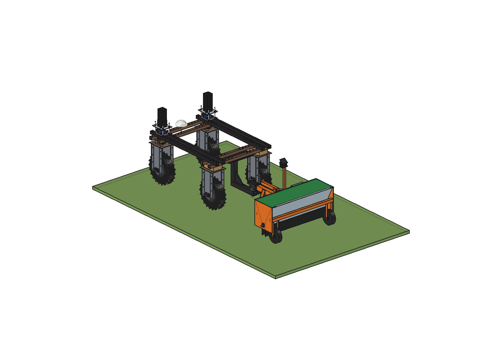
Overseeder (drop seeder)Overseeder with Cambridge roll
3 variants: Cambridge roll · Overseeder (drop seeder) · Overseeder with Cambridge roll Folder: overseeding/
Cambridge roll and overseeder · variant 1 of 3
Cambridge roll
1 m ring roller with 20 cast-iron rings Ø280 on a Ø40 shaft, on the tow hitch with coupling head and drawbar.
178 kg
100 ... 250 N draft
About €850 with the hitch
Folder: overseeding/cambridge roll/
Cambridge roll and overseeder · variant 2 of 3
Overseeder (drop seeder)
1 m drop seeder with a 49 l hopper and a fluted roller on a 24 V worm gearmotor that a camera switches on only over bare soil, on two small wheels.
61 kg
About 60 N draft
About €500
Folder: overseeding/overrseeder/
Cambridge roll and overseeder · variant 3 of 3
Overseeder with Cambridge roll
The seeder unit hangs between the arms of the roll: seed falls 300 mm in front of the rings and is rolled in. Includes the turn kinematics of the trailer and an animation with bare patches.
216 kg (234 kg full)
185 ... 310 N draft
About €1,200
Folder: overseeding/overseeder with cambridge roll/
Implement · Weed & Crop Protection
Cauliflower root-crown applicator
Doses insecticide in pulses onto the soil 40 mm beside the stem of every cauliflower plant (mid-season, 40 x 40 cm), not over the crop.
Simple
1 variant: Simple Folder: cauliflower applicator/
Cauliflower root-crown applicator · variant 1 of 1
Simple
Two rows pass under the robot; per row a parallelogram unit on UHMW skids follows the soil, leaf lifter rods clear the stem base and two 24 V solenoid valves fire 30° drop nozzles inside splash shrouds. A distance sensor finds the crown, wheel odometry times the pulse. 60 l tank, diaphragm pump, regulator and accumulator on the rear beams.
4 ml/plant = 250 l/ha
0.11 ha/h, 0.24 ha per tank
56.5 kg
Folder: cauliflower applicator/simple/
Implement · Power & Drive
Hybrid range extender
Petrol generator set on a steel tube base on top of the robot that charges the battery while driving; the battery delivers the peak power for heavy pulling (the worked-out generator / engine idea).
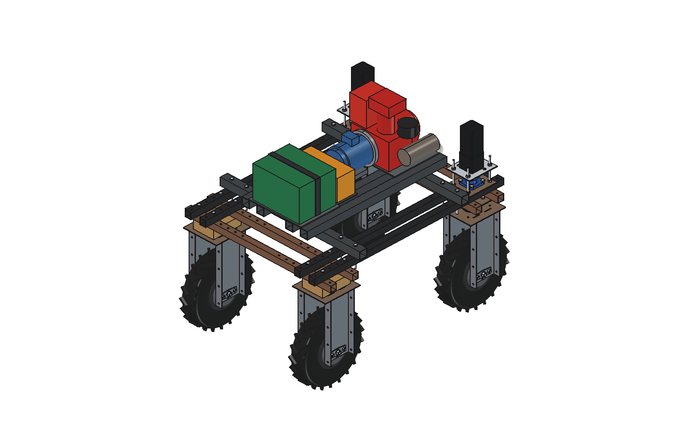
Range extender
1 variant: Range extender Folder: Hybrid/
Hybrid range extender · variant 1 of 1
Range extender
In-line train on 50 x 50 tubes bolted to the upper beams: 212 cc petrol engine (4.8 kW), jaw coupling, 3 kW permanent-magnet generator, controller box and a 16S 59 V 40 Ah battery (2.4 kWh). Clear of the steering stacks.
About 76 kg, cg z 868 mm
Light task: battery +2.1 kW
About 1.5 l/h at full output
Folder: Hybrid/
Implement · Measuring & Sensors
Potato disease scout
A light-tight camera hood in front of the robot, 3.0 m over 4 potato rows: 10 downward cameras and 20 LED strobe bars photograph every plant, day and night, for virus (PVY, leaf roll), blackleg and late blight; suspect plants are stored with their GNSS position (cf. Doorgrond Croptiscan).
Potato
1 variant: Potato Folder: disease scout/
Potato disease scout · variant 1 of 1
Potato
Centre section of 1.2 m and two 0.9 m wings that swing forward round a kingpin on the roof (24 V actuator each): 1.20 m wide in transport. The hood rides on 4 castors in the furrows and is pushed by a parallelogram from two posts on the front beams, so the robot carries almost nothing. Strip curtains let the haulm through; 12 mm lenses give 0.16-0.24 mm/px, a 200 µs flash freezes the motion.
3.0 m, 0.86 ha/h at 1 m/s, 3.9 ha per charge
Folded 1.20 m wide
135 kg (hood 120 kg on castors)
Folder: disease scout/potato/
Implement · Transport & General
Magnet sweeper
Flat permanent magnet 20 mm over grass, festival fields and yards that picks up nails, screws, tent pegs, wire and bottle caps. Emptied over a flat tray at the field edge by lifting the magnet core inside its box; on the push blade's arms and the broom's castors (imported).
Simple
1 variant: Simple Folder: magnet sweeper/
Magnet sweeper · variant 1 of 1
Simple
Aluminium box 1100 x 240 with a 3 mm stainless skin; inside a steel back plate with 2 rows of 10 NdFeB N35 blocks 100 x 100 x 10 (opposite poles for a strong field gradient) on 4 guide rods. A 3000 N actuator on the lid lifts the core 100 mm: the field at the skin drops from 140 to 20 mT and the iron falls into a 10 mm high tray, without lifting the arms.
Nails picked up 35-56 mm from the magnet
~0.41 ha/h, ~2.2 ha per charge
No ballast needed to empty; 125 kg
Folder: magnet sweeper/simple/
Implement · Soil Cultivation & Weed Control
Drop-on-demand boom
A light-tight hood under the belly of the robot, over one bed of 0.6 m: a camera finds the weeds and a rail of 24 micro-injectors fires single 5 ul drops onto them, inside the hood (no drift). ~3 l/ha against 200 l/ha broadcast; tank, pump and control box of the spot sprayer (imported).
Simple
1 variant: Simple Folder: drop on demand boom/
Drop-on-demand boom · variant 1 of 1
Simple
Aluminium hood 600 x 524 x 360 with a brush strip, on 2 rails under the lower beams and 4 posts (3 height steps of 25 mm). 5 MP camera straight down with 2 LED bars, 0.29 mm/px; 465 mm behind the image edge a manifold with 24 solenoid micro-injectors at 25 mm pitch, tips 80 mm above the soil, 0.5 bar from a second regulator and accumulator. Drops fall in 62 ms and hit at 1.6 m/s (no splash); none within 40 mm of a crop plant.
~3 l/ha (98.5 % less), 30 l = ~10 ha
0.08 ha/h at 0.5 m/s, ~4.4 h per charge
74 kg empty
Folder: drop on demand boom/simple/
Implement · Measuring & Sensors
Metal detector
Pulse-induction metal detector that maps buried metal (cans, wire, horseshoes, bolts, plough points) and logs a GNSS point per hit. A 600 x 400 search coil slides on PE skids 1.2 m in front of the robot on a floating glass-fibre boom, away from the robot's steel.
Simple
1 variant: Simple Folder: metal detector/
Metal detector · variant 1 of 1
Simple
2 steel root brackets on the front outer lower beam with a stainless pivot pin, a boom of 2 GFRP tubes 50 x 50 with GFRP cross tubes and carrier, a mono loop 600 x 400 in an ABS housing on 2 PE skids, a PI board in an IP67 box and a 500 N actuator with a float slot that lifts the boom 14 degrees at the headland. No metal in front of the pivot.
Can ~0.49 m, horseshoe ~0.42 m, bolt ~0.15 m deep
0.18 ha/h, ~1.8 ha per charge
Hit position ~0.1 m; 18 kg
Folder: metal detector/simple/
Implement · Weed & Crop Protection
Hot foam weeder
Kills weeds on paths, yards, fence lines and tree rows with hot water (96 C) and 0.5 % foam under the flame weeder's insulated hood: no flame on the ground, so also where flaming is a fire risk. Hood, castors, parallelogram and propane of the flame weeder (imported).
Simple
1 variant: Simple Folder: hot foam weeder/
Hot foam weeder · variant 1 of 1
Simple
A 40 kW propane coil boiler, the water pump and a foam can with a dosing pump on a rear rack; a ~95 l water tank under the belly on the drop-on-demand rails; a foam bar with 12 nozzles in the 1.5 m hood instead of the burners. 6.8 l/min at 96 C gives 0.4 l/m2 at 0.19 m/s; the foam keeps the leaves hot for ~20 s.
~1000 m2/h, 240 m2 per tank of water
Propane ~36 kg/ha (as flaming)
224 kg empty, hood on its castors
Folder: hot foam weeder/simple/
Implement · Transport & General
Debris vacuum
Vacuums litter after a festival (cups, cans, bottles, caps, butts) and solar-panel glass shards from grassland. A 1 m nozzle with a brush roller on the magnet sweeper's head and castors, a O125 hose to a 270 l bin on the upper beams, and a clean-air fan on the lid so glass never passes the impeller.
Simple
1 variant: Simple Folder: debris vacuum/
Debris vacuum · variant 1 of 1
Simple
Steel nozzle 1030 x 300 with rubber flaps and a PP brush roller O200 (48 V 250 W worm gearmotor), PU hose O125, aluminium bin 900 x 750 x 400 with a liner bag and a rear door on 2 cross bars bolted to the upper beams, centrifugal fan O420 with a 48 V 1.2 kW motor behind a screen in the lid.
0.27 m3/s at 22 m/s: carries PV glass shards
0.26 ha/h, ~1.4 kW: 0.34 ha per charge
156 kg; range extender for big sites
Folder: debris vacuum/simple/
Implement · Spraying, Fertilizing & Irrigation
Biostimulant sprayer
Sprays compost tea, seaweed extract or nitrogen-fixing bacteria over the whole field at the right moment, and logs every pass with weather and GNSS track. The spot sprayer (tank, pump, 3.75 m folding boom) imported as it is, with coarse tips, an aerator and a weather mast.
Simple
1 variant: Simple Folder: biostimulant sprayer/
Biostimulant sprayer · variant 1 of 1
Simple
All 15 nozzles open with size 02 twin flat-fan turbulence tips at 1.5 bar (coarse drops, gentle for living organisms, no blocking behind the 50-mesh filter); a 30 l/min air pump and a diffuser ring keep compost tea aerobic; an all-in-one weather sensor on a mast on the rear beams lets the controller spray only inside the weather window.
186 l/ha at 2 m/s, 0.64 ha per tank
~1.5 ha/h with refills, ~3.4 ha per charge
83 kg empty
Folder: biostimulant sprayer/simple/
Implement · Livestock & Farm
Fence inspector
Drives along an electric fence and reads the voltage and current of every pulse without touching the wire (E-field plate and pickup coil 80 mm away), one reading per metre with GNSS: breaks, leaks and shorts on a map, and a photo of every post.
Simple
1 variant: Simple Folder: fence inspector/
Fence inspector · variant 1 of 1
Simple
Base plate on the right upper beams with a mast 60 x 60, a carriage on a Tr16 lead screw with a stepper (wires 300-1100 mm), a side arm on a spring hinge that swings back on obstacles, and a sensor head with an E-field plate, a pickup coil and a ToF distance sensor; a camera on the mast top for the posts.
Voltage +-9 % at 80 mm, contactless
1 reading per metre, ~42 km per charge
23 kg
Folder: fence inspector/simple/
Implement · Livestock & Farm
Drinking trough check
Visits drinking troughs at stored GNSS positions, measures the water level with an ultrasonic sensor, photographs the water and tops the trough up from its own 160 l tank when the float valve or supply has failed. Uses the fence inspector's mast and carriage with a longer arm.
Simple
1 variant: Simple Folder: drinker check/
Drinking trough check · variant 1 of 1
Simple
Fence-inspector mast with lead screw and spring hinge (imported), a 635 mm arm with a head holding an ultrasonic level sensor, a camera and a 3/4 inch fill nozzle, and a 160 l PE tank with a 24 V 20 l/min pump on cross bars on the left upper beams.
Level +-5 mm (+-4 l)
85 l top-up in ~4 min
~11 rounds of 6 troughs per charge
Folder: drinker check/simple/
Implement · Measuring & Sensors
Soil moisture sensor placer
Places wireless soil moisture sensors at set GNSS points, reads them by radio and picks them up again at the end of the season. The soil sampler's Z axis (imported) with a gripper, and a magazine star of 6 sensors.
Simple
1 variant: Simple Folder: soil moisture placer/
Soil moisture sensor placer · variant 1 of 1
Simple
A 24 V gripper on the soil sampler's carriage holds a sensor by its knob; a star of 6 fork arms on a shaft from the rear bridge carries the sensors. The gripper lifts a sensor out of the index fork, the star turns half a step and the ball screw pushes the O20 x 300 stem into the soil with the weight of robot and placer. Sensor: cap with LoRa radio and 2 AA lithium cells, rings at 100 and 250 mm.
~850-1320 N push, 1350 N available
~64 s per sensor, 6 per trip (3 ha)
36 kg incl. 6 sensors
Folder: soil moisture placer/simple/
Implement · Crop & Soil
Mole and tunnel mapper
Maps fresh molehills with 3 RGB cameras and a thermal camera on a 1.4 m camera bridge, and finds the tunnels around a hill with the soil compaction meter's cone penetrometer: a resistance drop 50-250 mm deep is a tunnel.
Simple
1 variant: Simple Folder: mole mapper/
Mole and tunnel mapper · variant 1 of 1
Simple
Aluminium camera bridge on the front outer lower beam with 3 RGB 4K cameras and a thermal camera covering 2.5 m, plus the soil compaction meter (imported) that probes a ring of 16 points around a fresh hill.
1.26 ha/h mapping, ~9 ha per charge
Tunnel found ~85 % with 16 probe points
40 kg
Folder: mole mapper/simple/
Implement · Measuring & Sensors
Windbreak and tree-row inspector
Drives along hedgerows, windbreaks and orchard rows: a 2D lidar scans the row profile (height, width, density, gaps) every 150 mm and a stereo pair plus a crown camera photograph it; each trunk gets its own GNSS point and status line.
Simple
1 variant: Simple Folder: windbreak inspector/
Windbreak and tree-row inspector · variant 1 of 1
Simple
Fence-inspector mast and base plate (imported) with an extension tube to 2.1 m and a sensor head: a 270 degree 2D lidar in a vertical plane across the row, a vertical stereo camera pair and a crown camera tilted up 35 degrees.
Profile every 150 mm, up to 6 m trees
~40 km of row per charge
26 kg
Folder: windbreak inspector/simple/
Implement · Sowing & Planting
Tray setter
Transplanter: an XYZ gantry with a needle gripper takes plug seedlings out of 2 trays on top of the robot and drops them through tubes to 2 runner shoes with press wheels under the belly (2 rows, 300 mm in the row).
Simple
1 variant: Simple Folder: tray setter/
Tray setter · variant 1 of 1
Simple
Tray table on the upper beams with 2 plug trays of 128 cells; Y rails on the table edges, an X beam and a picker with a 4-needle gripper (GT2 belts, NEMA17). Each plug falls through a funnel and a O50 tube into the boot of a runner shoe that opens a 60 mm slot; 2 press wheels tilted 15 degrees close it. The shoes hang from the belly rails of the drop-on-demand boom.
1.6-3.0 s per plant, 0.048 m/s
~780 plants/h, 256 per set of trays
68 kg with full trays
Folder: tray setter/simple/
Implement · Measuring & Sensors
Yield estimator
Counts and sizes heads and plants in 4 rows with RGB cameras, depth cameras and LED flashes on the mole mapper's camera bridge, and logs each plant with GNSS, size and ripeness for a harvest forecast.
Simple
1 variant: Simple Folder: yield estimator/
Yield estimator · variant 1 of 1
Simple
Mole-mapper camera bridge (imported) with 4 RGB 4K cameras (one per row at 450 mm), 2 ToF depth cameras and 3 LED flash bars. Head diameter to 0.25 mm/px, mass +-12 % per head, +-0.4 % on 1000 heads after calibration.
0.65 ha/h, ~29 000 plants/h
~4.9 ha per charge
10 kg
Folder: yield estimator/simple/
Implement · Transport & General
Speech speaker
Two 30 W horn speakers (front and rear), an amplifier and a microphone: the robot warns people, reports status and lets an operator talk through it; the volume follows the distance to the nearest person.
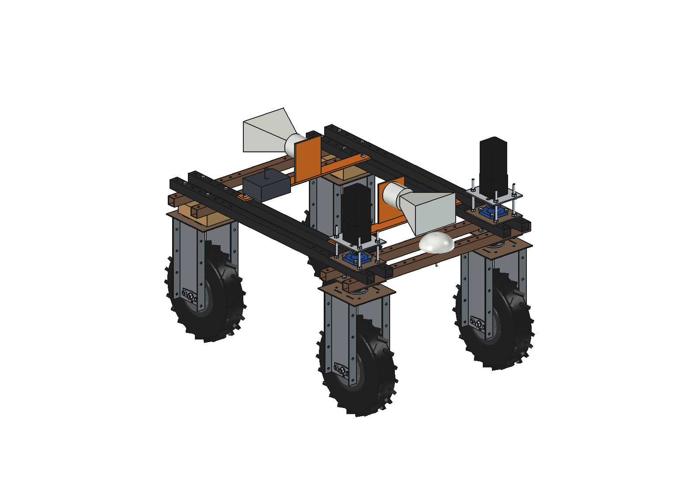
Simple
1 variant: Simple Folder: speaker/
Speech speaker · variant 1 of 1
Simple
2 flat bars across the inner upper beams, each with a horn speaker on an upright plate (the front one over the GNSS dome), an IP65 amplifier box and a microphone.
120 dB at 1 m
~300 m reach on a farmyard
Max 0.25 W near animals
Folder: speaker/simple/
Implement · Weed & Crop Protection
Laser weeder
Kills weed seedlings with a laser under a light-tight hood: a camera finds each weed and a galvo scan head aims the beam of a fibre-coupled 60 W diode laser at its growing point, without chemicals or soil movement.
Simple
1 variant: Simple Folder: laser weeder/
Laser weeder · variant 1 of 1
Simple
Hood, belly rails and camera of the drop-on-demand boom (imported); 2 galvo scan heads (one per 300 mm of the 0.6 m bed) and 2 x 60 W diode lasers in an air-cooled box on top, linked by armoured fibres. Class 4: fires only with the hood down and the robot level.
~19 J, 0.33 s per weed
0.2 m/s, ~990 m2 per charge
~48 kg
Folder: laser weeder/simple/
Implement · Measuring & Sensors
Security patrol
A 2 m camera mast with a pan/tilt head (30x zoom day/night camera, thermal camera, IR light), 4 fixed all-round cameras, horns and a beacon: the robot patrols the farm at night, sweeps every viewpoint with the thermal camera and alerts the farmer.
Simple
1 variant: Simple Folder: security patrol/
Security patrol · variant 1 of 1
Simple
Mast 60 x 60 x 3 on an 8 mm plate across the 4 upper beams behind the centre (8 x M10); pan/tilt head at 2.23 m with a 4 MP 30x zoom camera, a 640 x 512 thermal camera and an 850 nm illuminator; 4 fixed 2 MP cameras, 2 horn speakers, beacon, microphone and an IP65 box with recorder and LTE router.
Thermal: person detected at ~780 m
~12 rounds of 2 km per charge
~38 kg
Folder: security patrol/simple/
Implement · Transport & General
Seat, canopy and frame extension
A seat so a person can ride on the robot and drive it by hand, a roll bar with a light canopy, and a pair of side extensions of the frame to x +-800 for wider implements.
Simple
1 variant: Simple Folder: seat frame extension/
Seat, canopy and frame extension · variant 1 of 1
Simple
Cross tubes on the upper beams; the 2 rear ones are 1600 mm long side extensions with a 50 mm hole grid. Tractor seat with a seat switch over the rear axle, a console with joystick and emergency stop on the right armrest, a checker-plate footplate, a roll bar O42 at x +-600 with a polycarbonate canopy. Manual mode only, at most 1.5 m/s.
94 kg; 114 / 231 kg front / rear with a 90 kg operator
Tip 23 degrees sideways, turn margin 5.5
Extensions to x +-800
Folder: seat frame extension/simple/
Implement · Weed & Crop Protection
Pheromone trap service
Weekly round of the pheromone and sticky traps on the field edges: the head on the fence-inspector mast pulls out the drawer of each trap, photographs the sticky card to count the catch and pushes a fresh lure capsule into the clip when it is due.
Simple
1 variant: Simple Folder: pheromone trap service/
Pheromone trap service · variant 1 of 1
Simple
Fence-inspector mast and carriage (imported) with a fixed arm, MGN12 guide and 24 V actuator; the head has a hook, a 12 MP camera with LED ring and a revolver of 12 lure capsules with a plunger. Robot-friendly delta trap with a pull-out drawer.
~50 s per trap
40 traps: 2.4 h, 22 % of a charge
~27 kg
Folder: pheromone trap service/simple/
Implement · Cooperation & Swarm Operation
Drone combination
A 1 m landing platform above the robot so a mapping drone uses it as a mobile base station: it takes off, maps ~97 ha per flight, lands back, sends its images and charges from the robot battery.
Simple
1 variant: Simple Folder: drone combination/
Drone combination · variant 1 of 1
Simple
Aluminium plate 1000 x 1000 at z 1100 on 4 posts and 2 cross bars over the upper beams, PE guide wedges for passive centring, copper charging strips with holding magnets, an AprilTag for landing, and the GNSS antenna moved to a platform corner.
Catches landings up to 0.25 m off
~60 min charge = 4.6 % of the robot battery
42 kg
Folder: drone combination/simple/
Implement · Livestock & Farm
Chicken house robot
Turns the litter in a poultry house with a tine rotor in the broom sweeper's head, measures NH3, CO2, temperature and humidity at bird height and watches the flock with a 360 degree camera.
Simple
1 variant: Simple Folder: chicken house robot/
Chicken house robot · variant 1 of 1
Simple
Broom sweeper (imported) with 60 spring tines O6 instead of bristles (tip circle O360, 150 rpm, 10 mm above the concrete), a climate sensor box under the rear beam with an inlet at 300 mm, and a 360 degree camera on a 1.4 m post.
1500 m2 house in ~1.5 h
~810 W rotor, 1.4 houses per charge
122 kg
Folder: chicken house robot/simple/
Implement · Power & Drive
Charging robot
A second Bruut as a mobile charger: 4 battery-pack pods (10.2 kWh) on a deck, a 1.5 kW DC/DC charger and the charging dock's contact head on an arm at the rear, so a working robot docks and charges in the field instead of driving to the shed.
Simple
1 variant: Simple Folder: charging robot/
Charging robot · variant 1 of 1
Simple
Deck on 3 flat bars across the upper beams with 4 LiFePO4 pods (battery pack, imported), DC/DC 54 V CC/CV 1.5 kW, fuse box; rear bracket and arm with the dock's PE head, copper bars and funnel (charging dock, imported).
9.2 kWh usable, ~5.6 charges per trip
~73 min per charge (20 -> 100 %)
~135 kg on the robot
Folder: charging robot/simple/
Implement · Cooperation & Swarm Operation
Swarm operation
Several units work one field as a swarm: passes shared out, position and intent over a mesh radio, headland corridors reserved, a pass handed over when a unit stops. Per robot a swarm kit with radio, status light tower and computer.
Simple
1 variant: Simple Folder: swarm operation/
Swarm operation · variant 1 of 1
Simple
Swarm kit: a 1.5 m post on a bar across the inner upper beams with a 868 MHz mesh radio, a 4-colour status light tower and a swarm computer box. The calculation gives the speed-up per number of units, charger sharing, radio load and soil pressure.
4 units: 3.8x faster, 95 % efficient
One charger per ~3 units
16 kPa per unit vs 42 kPa tractor
Folder: swarm operation/simple/
Implement · Power & Drive
Heavy-duty electric motors
A universal quick-change module for bought battery garden-tool motors (56-60 V brushless lawnmower motors, ~2 kW) with an own BLDC controller on the robot's 48 V bus, shown on a 530 mm mid-mower deck under the belly.
Simple
1 variant: Simple Folder: heavy duty motors/
Heavy-duty electric motors · variant 1 of 1
Simple
Aluminium interface plate with a brand adapter ring slides into a dovetail receiver on the implement and is held by one lock pin. A 75 V-class BLDC controller in an IP67 box runs the motor from the robot's 48 V bus (the tool battery in a clip is an option). Demonstrator: mower deck O600 with side discharge, hung from the belly rails with 3 cutting heights.
~1.55 kW electric mowing, 32 A at 48 V
~1350 m2/h, ~1750 m2 per robot charge
Module 8 kg, deck 39 kg
Folder: heavy duty motors/simple/
Implement · Transport & General
Sports field line marker
Paints the lines of a football or hockey field from a stored layout: one paint nozzle on the rear axle line follows the steered path exactly, a short slide across the robot corrects the line and draws the tight corner arcs.
Simple
1 variant: Simple Folder: line marker/
Sports field line marker · variant 1 of 1
Simple
Belt module (stroke 340) hung from the belly rails at the rear axle line, a paint head with a 12 V valve, an even flat-fan tip and a brush-skirted shroud, a drag chain for the hose; tank, pump, regulator (agitation) and control box of the spot sprayer.
Football field (717 m) in ~19 min, ~10 l paint
~18 mm (95 %) at the nozzle, estimated
62 kg empty
Folder: line marker/simple/
Implement · Livestock & Farm
Concentrate dispenser
Doses concentrate pellets or minerals on the freshly pushed windrow while the robot pushes feed with the feed pusher auger, to draw the cows to the fence.
Simple
1 variant: Simple Folder: concentrate dispenser/
Concentrate dispenser · variant 1 of 1
Simple
47 l stainless hopper in the middle of the robot on 4 load cells (loss-in-weight dosing), a metering auger O54 in a tube out past the feed pusher's discharge end and a rubber spout over the windrow; NEMA 23 with a 10:1 planetary.
100 g per feeding place at 0.35 m/s (5-150 g)
+-2 % by loss-in-weight (estimated)
37 kg empty, 69 kg full
Folder: concentrate dispenser/simple/
Implement · Weed & Crop Protection
Insect vacuum
Sucks pest insects (lygus bugs in strawberries, Colorado beetles) off the crop instead of spraying: push-pull under a closed belly hood, a mesh basket keeps the catch for counting.
Simple
1 variant: Simple Folder: insect vacuum/
Insect vacuum · variant 1 of 1
Simple
The drop-on-demand boom's hood with 2 air knives low along the bed (8 mm slots, blowing in and up), 2 slot nozzles over the rows and a strip curtain; hoses up into a catch box with a 0.8 mm mesh basket; the fan on the lid blows the clean air back to the knives (closed loop).
Jet ~23 / 13 m/s at the near / far row
~670 W fan, ~0.43 ha per charge
68 kg
Folder: insect vacuum/simple/
Implement · Livestock & Farm
Calf milk taxi
Brings warm milk from the calf milk kitchen to the hutches and doses each calf's portion into its teat bucket: insulated tank, peristaltic pump and a swing arm with an RFID reader.
Simple
1 variant: Simple Folder: calf milk taxi/
Calf milk taxi · variant 1 of 1
Simple
83 l insulated stainless tank with stirrer and 300 W heating mat on the upper beams, a 6 l/min peristaltic pump, and a swing arm on a hollow-shaft gearmotor that puts the nozzle over the bucket at x 920; RFID and camera at the tip.
28 calves at 3 l per fill, ~18 min per round
-0.4 K/h without heating
76 kg empty, +86 kg milk
Folder: calf milk taxi/simple/
Implement ideas
Ideas not worked out yet
12 ideas (from the website's list, own brainstorming and the robot catalogue) that have no model yet. Each has a folder in implement ideas/ with a README.md describing what it does, so it can be worked out later.
Crop & Soil
Power harrow / rotary tiller
Flail mulcher
Riding arena leveller
Sowing & Planting
Precision seeder (single seed)
Spraying, Fertilizing & Irrigation
Air-assisted orchard sprayer
Livestock & Farm
Manure vacuum collector
Feed mixing and distribution wagon
Fresh grass harvester (zero grazing)
Barn pressure washer
Transport & General
Hedge trimmer, edger and leaf blower
Weeding bed (lying platform)
Asparagus harvester
Idea · Crop & Soil
Power harrow / rotary tiller
Not worked out yet
What it does
Driven tines or blades work the top soil into a seedbed, or loosen the soil between vines and trees. Seen on vineyard and orchard robots (Slopehelper power harrow, Pellenc RX-20, Naïo Ted) and small electric tractors.
Concept (first thoughts)
A narrow rear-mounted rotor with vertical tines (power harrow) or L-blades (rotary tiller) and a crumbler roller that sets the depth, driven by a geared electric motor. Lifted by a linear actuator like the grassland harrow. Works in strips, so the power stays within what the robot can supply.
Reuse from existing implements
Rear mount and lift of the grassland harrow; gearmotor and chain drive of the dockweed drill; power supply from the battery pack or hybrid range extender.
Open questions
Working width versus available power and traction
Rotor speed, tine type and working depth
Draft and reaction forces on a light robot
Stones: overload protection of the rotor
Folder: implement ideas/power_harrow/
Idea · Crop & Soil
Flail mulcher
Not worked out yet
What it does
Shreds prunings, tough grass, stubble and crop residues between rows instead of only cutting them. Seen on orchard and vineyard robots (Slopehelper drum mulcher, XAG RM80, Bonsai OMC AR500).
Concept (first thoughts)
A rear-mounted flail rotor with Y-knives or hammers in a closed housing with a rear roller that sets the cutting height. Belt-driven from a strong electric motor. A swing-out side section could also reach under the tree row.
Reuse from existing implements
Housing, belt drive and height setting of the mower unit (mowing deck); motor options of the heavy-duty electric motors; swing-out arm of the around-pole fence mower.
Open questions
Power needed for prunings versus grass
Rotor speed, knife type and stone throw protection
Width that fits the row spacing
Mass on the rear and balance with counterweights
Folder: implement ideas/flail_mulcher/
Idea · Crop & Soil
Riding arena leveller
Not worked out yet
What it does
Levels and loosens the footing of a horse riding arena at night, so it is ready every morning. Seen on Fraunhofer ARA (tracked arena robot).
Concept (first thoughts)
A rear tool frame with a row of loosening tines, a levelling board and a small roller or mesh, driven over the arena in a fixed RTK or lidar pattern (indoor arenas have no RTK). The depth and board height are set by a linear actuator.
Reuse from existing implements
Levelling board, tines and lift of the grassland harrow; push blade for moving sand back from the edges; lidar ideas of the chicken house robot for indoor navigation.
Open questions
Navigation in an indoor arena without RTK
Footing types (sand, sand with fibres, wood chips) and the depth to work
Edges and corners along the arena wall
Watering the footing at the same time
Folder: implement ideas/arena_leveller/
Idea · Sowing & Planting
Precision seeder (single seed)
Not worked out yet
What it does
Sows row crops (beet, maize, vegetables) seed by seed and records the RTK position of every seed, so a later weeding pass can hoe around each plant before it is even visible. Seen on FarmDroid FD20 and Fendt Xaver.
Concept (first thoughts)
Two to four seeding units on a toolbar behind the robot, each with a small hopper, a vacuum or finger metering disc driven by its own stepper, a coulter and a press wheel. The controller logs each seed drop with the RTK position and time.
Reuse from existing implements
Toolbar and parallelogram units of the inter-row hoe; metering motor and hopper of the overseeder; position logging and odometry timing of the cauliflower applicator; in-row weeder for the follow-up pass.
Open questions
Metering principle (vacuum, finger, cell wheel) per crop
Accuracy of the logged seed position at the working speed
Depth control and soil closing
Row spacing and number of units per pass
Folder: implement ideas/precision_seeder/
Idea · Spraying, Fertilizing & Irrigation
Air-assisted orchard sprayer
Not worked out yet
What it does
Sprays the canopy of fruit trees, vines or hedges with an air stream that carries the droplets into the leaves, and switches nozzles off where there is no canopy. Seen on GUSS, LJ-Tech S500Pro, MQ Agritech M200 and Smart Apply.
Concept (first thoughts)
A tank on the upper beams, an axial fan at the rear with a ring of nozzles, or two vertical towers with cross-flow fans. A lidar or camera measures the canopy per height section and switches each nozzle section on and off.
Reuse from existing implements
Tank, pump and control box of the spot sprayer; nozzle switching of the drop-on-demand boom; canopy sensing of the windbreak and tree-row inspector.
Open questions
Fan power and air volume versus battery
Tank size versus mass and the robot's payload
Drift: tower or tunnel version, canopy sensing
Height of the trees to reach
Folder: implement ideas/orchard_air_sprayer/
Idea · Livestock & Farm
Manure vacuum collector
Not worked out yet
What it does
Sucks fresh manure from a solid barn floor into a tank and empties it at a drain or pit, instead of pushing it. Seen on the Lely Discovery Collector, Hetwin Avenger Pickup, Schauer Enro Collect and JOZ Barn-E.
Concept (first thoughts)
A low tank on the upper beams, a vacuum pump and a wide suction nozzle with a rubber squeegee at the front. The robot drives a fixed route through the barn and drives to a dump point, where a valve at the bottom of the tank opens.
Reuse from existing implements
Nozzle and fan or pump layout of the debris vacuum; route driving and squeegee of the push blade (slurry scraping); mobile refiller docking for the dump point.
Open questions
Vacuum pump type that handles slurry with straw
Tank volume versus mass and the floor's grip
Navigation in a barn with cows (no RTK under the roof)
Emptying point and cleaning
Folder: implement ideas/manure_vacuum/
Idea · Livestock & Farm
Feed mixing and distribution wagon
Not worked out yet
What it does
Loads, weighs and mixes a ration and lays it along the feed fence several times a day. Seen on the Lely Vector, DeLaval OptiWagon, GEA DairyFeed F4500, Kuhn Aura and Trioliet Triomatic.
Concept (first thoughts)
A small mixing bin with a vertical auger on the upper beams and a discharge door or cross conveyor at the side. Loads at a feed kitchen (loaded by hand or from a hopper), weighs on load cells and drives along the feed fence on the same route as the feed pusher.
Reuse from existing implements
Auger and side discharge of the feed pusher auger; load cell weighing of the mobile refiller; route along the feed fence of the feed pusher.
Open questions
Bin volume versus mass and stability
Mixing power of a vertical auger on a battery
Loading: feed kitchen, hopper or by hand
Feeding small groups (calves, young stock) versus the whole herd
Folder: implement ideas/feed_mixer_wagon/
Idea · Livestock & Farm
Fresh grass harvester (zero grazing)
Not worked out yet
What it does
Mows fresh grass in the field, loads it and brings it to the feed fence, several times a day. Seen on the Lely Exos.
Concept (first thoughts)
A front sickle bar or disc mower, a short pick-up belt or auger that lifts the swath into a container on the robot, and an unloading floor or tipping container at the feed fence. Small loads, many trips.
Reuse from existing implements
Sickle bar mower; belt rake for the pick-up; dumper barrow or bag trailer for the container; feed pusher route at the barn.
Open questions
Load per trip versus mass and the field's bearing capacity
Pick-up of fresh, heavy grass
Unloading at the feed fence
Trips per day for a given number of cows
Folder: implement ideas/fresh_grass_harvester/
Idea · Livestock & Farm
Barn pressure washer
Not worked out yet
What it does
Cleans pens, walls and floors with a high-pressure water jet when the barn is empty, around the clock. Seen on the Envirologic Evo Cleaner (pig barns).
Concept (first thoughts)
A pressure washer pump on board (water by hose or from a tank) and a nozzle on a small arm with two axes that follows a taught pattern per pen. The robot moves from pen to pen on a stored route.
Reuse from existing implements
Arm and axes of the weed picker or field marker; tank and pump of the mobile refiller; motor options of the heavy-duty electric motors.
Open questions
Water supply: hose reel or tank
Waterproofing of the robot and its electronics
Arm reach for walls and partitions
Navigation in a wet, empty barn
Folder: implement ideas/barn_pressure_washer/
Idea · Transport & General
Hedge trimmer, edger and leaf blower
Not worked out yet
What it does
Trims hedges, cuts lawn edges along paths and blows leaves into a windrow, without a gardener walking along. Seen on the Electric Sheep Verdie.
Concept (first thoughts)
A side arm with two axes that carries a hedge trimmer bar, swapped for an edger disc at ground level, and a separate blower nozzle at the front. The robot follows the hedge or path edge with a camera or a stored RTK line.
Reuse from existing implements
Arm and swing-out of the around-pole fence mower; following a line of plants of the windbreak and tree-row inspector; garden-tool motors of the heavy-duty electric motors; broom sweeper for picking up the windrow.
Open questions
Arm reach and height for hedges
Detecting the hedge face and the path edge
Safety of the trimmer bar near people
Blower power and noise
Folder: implement ideas/landscaping_tools/
Idea · Transport & General
Weeding bed (lying platform)
Not worked out yet
What it does
Carries one or more workers lying face down just above the crop, so they can weed or harvest by hand without bending, while the robot creeps along the bed. Seen on the Fieldworkers Weed-E.
Concept (first thoughts)
A wide frame on the upper beams with padded lying boards and a sun canopy, the people facing down over the rows. The robot drives very slowly in a straight line; a hand button on each board stops or starts it.
Reuse from existing implements
Frame extensions, seat and canopy of the seat, canopy and frame extension; solar canopy; stop button and slow driving of the crate carrier (following a picker).
Open questions
Number of workers and frame width over the beds
Speed control by the workers and safety stops
Comfort: height above the crop, padding, shade
Mass of the people versus the robot's payload
Folder: implement ideas/weeding_bed/
Idea · Transport & General
Asparagus harvester
Not worked out yet
What it does
Finds white asparagus spears that push up through the ridge, cuts them below the surface and lifts them out. Seen on the AVL Compact S9000 and the Inaho harvesting robot.
Concept (first thoughts)
A module that straddles one ridge, with a camera or a sensor that detects spear tips breaking the plastic or soil, a narrow cutting and gripping tool on a vertical axis that goes into the ridge, and a crate on the robot. The robot creeps along the ridge.
Reuse from existing implements
Vertical axis and drill head layout of the dockweed drill; camera hood of the potato disease scout; crate carrier deck for the harvested spears.